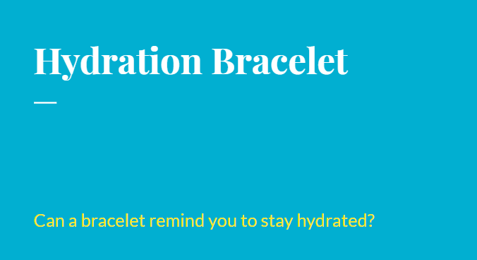

Hydration bracelet
In this project, our goal was to think of a non digital device to help someone change a behavior.
I chose drinking more water as the behavior I wanted to try to help change.
I used the crazy 8's technique to brainstorm ideas.
I came up with a beaded bracelet with a moveable clasp on it for my "device".
This was my final product.
I did pre and post interview questions before and after having people use my prototype.
Overall, my bracelet proved to be a success!